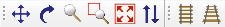
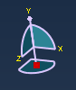
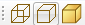
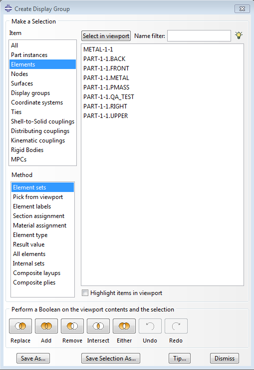
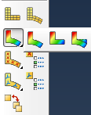
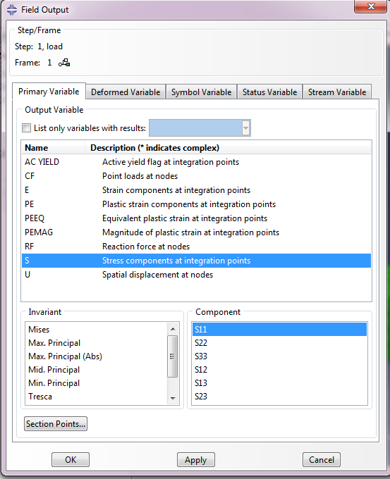
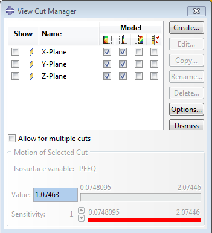
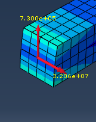
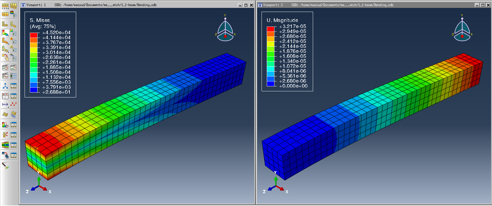
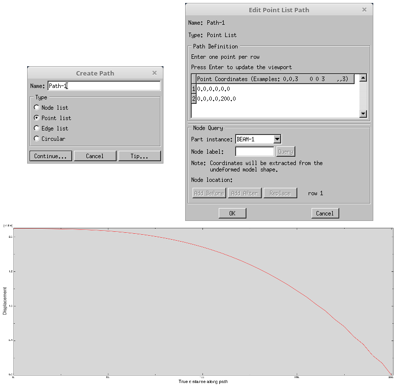

|
|
A Short Course for Engineers |
Postprocessing & Visualization
Contents
Exercise 2: Exploring the Beam Analysis Results
There are many, many ways to extract desired information out of a simulation. Let's follow through a few of them directly and see what data we can access.
If you haven't completed the first exercise, please download the Abaqus files in order to complete this section.
1. View Manipulation & OptionsIn the Toolbar, there is a View Manipulation menu.

In the Viewport, there is a View compass.

|
2. Render style

|
3. Display Group A display group is a collection of viewable objects allowing you to visualize data along certain surfaces or nodes or within certain volumes. To create a display group:
|
4. Field Output VisualizationViewing models each step
Viewing Both
Contours
 Symbol Plot
Customize
 Cutting Through A Model

|
Multiple Viewports
- From the menu, select
Viewport → Create. From the menu, selectViewport → Tile Verticallyto arrange viewports side by side. Now you can plot two different fields in each view port and compare side by side. Follow directions given in the Contours section to show spatial displacement at nodes in the new viewport.

5. More Advanced Tools
Path Plot
- Path plots can be used to visualize solution field along a predifined path. Here, we want to plot distribution of
displacement in the Z-direction along the cantilever.
From menu select
Tools → Path → Create.In the Create Path window, select Point List and hit continue.
In the appearing window, enter (0,0,0) and (0,0,200) as the point coordinates for the initial and terminal points and click Ok.
From menu select
Tools → XY data → CreateCrom Create XY Data, select Path and hit Continue
For the Path, select Path-1, choose Undeformed and toggle on Include interactions
Click on Field Output... and select U as the output variable and U3 as the component and hit Ok.
Click on Plot to see distribution of the displacement component along the selected path.

Credits
Neal Davis, Ruizhi Li, Binyue Hou, and Masoud Safdari developed these materials for Computational Science and Engineering at the University of Illinois at Urbana–Champaign.
 This content is available under a Creative Commons Attribution-NonCommercial 4.0 Unported License.
This content is available under a Creative Commons Attribution-NonCommercial 4.0 Unported License.